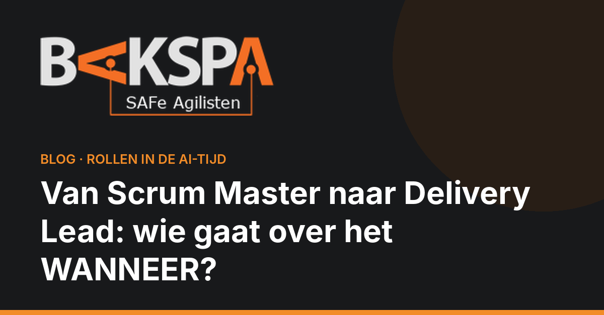
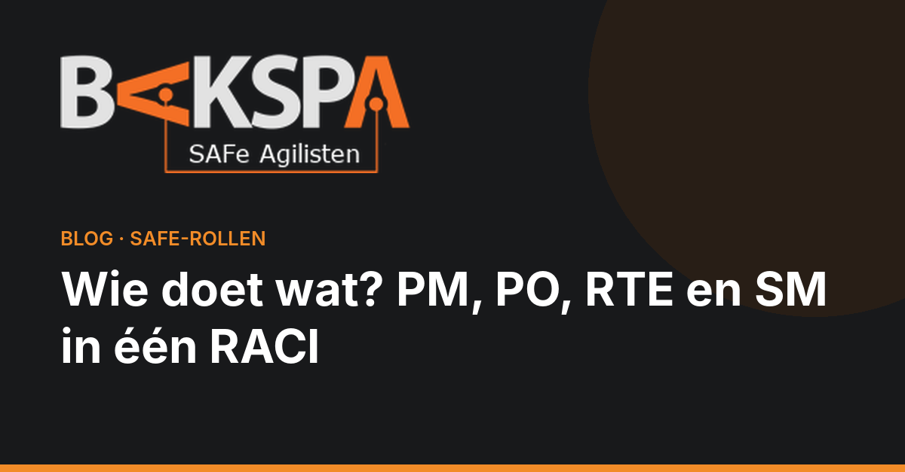

Blog
Uit de praktijk
Over SAFe®-rollen, verantwoordelijkheden en wat er in een Agile Release Train écht gebeurt.

Van Scrum Master naar Delivery Lead: wie gaat over het WANNEER?
Bedrijven laten de dedicated Scrum Master los, de vraag naar Delivery Leads groeit. Over het gat tussen wat, hoe en wanneer.

Wie doet wat? PM, PO, RTE en SM in één RACI
De rollen die het vaakst door elkaar lopen, naast elkaar gezet op basis van de officiële SAFe-trainingen.